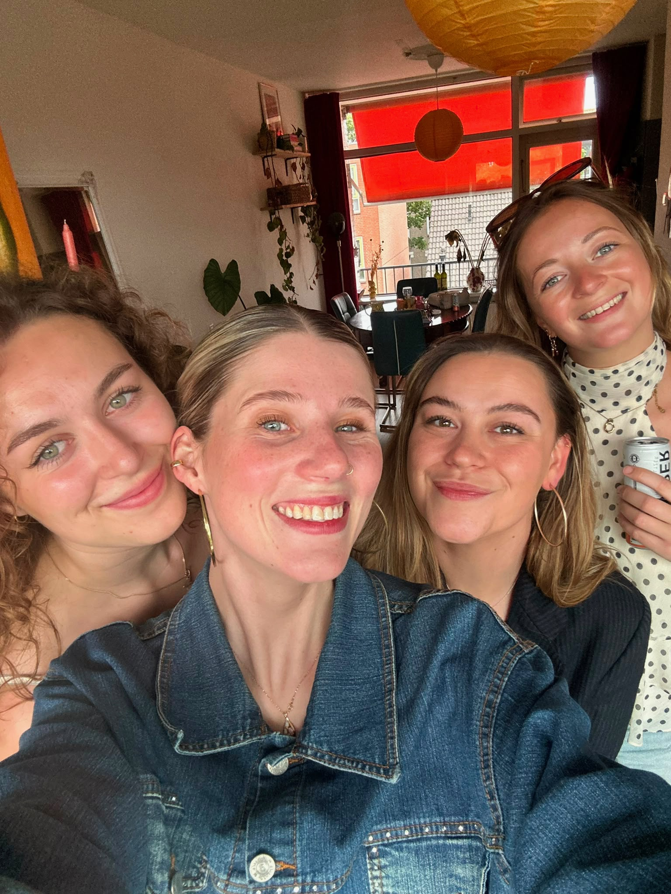
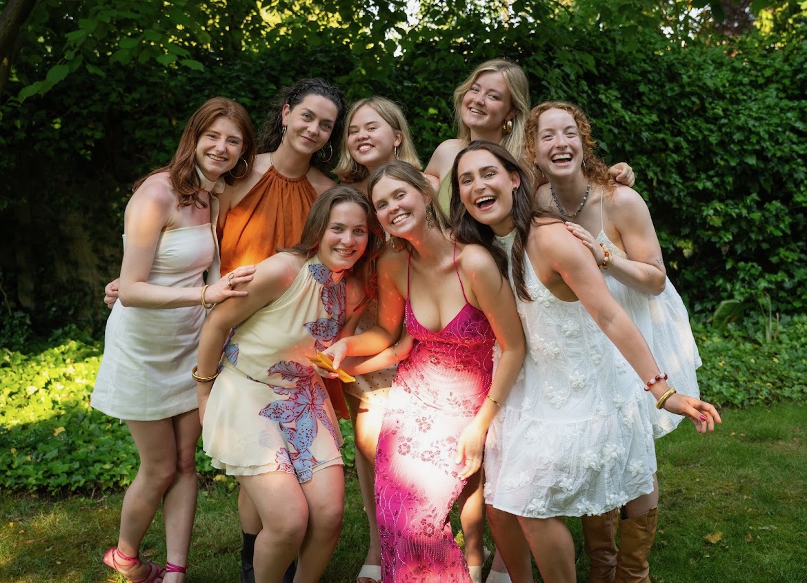
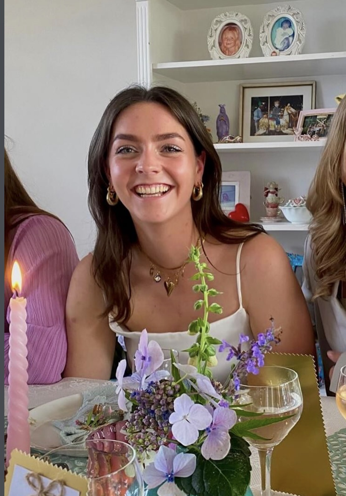
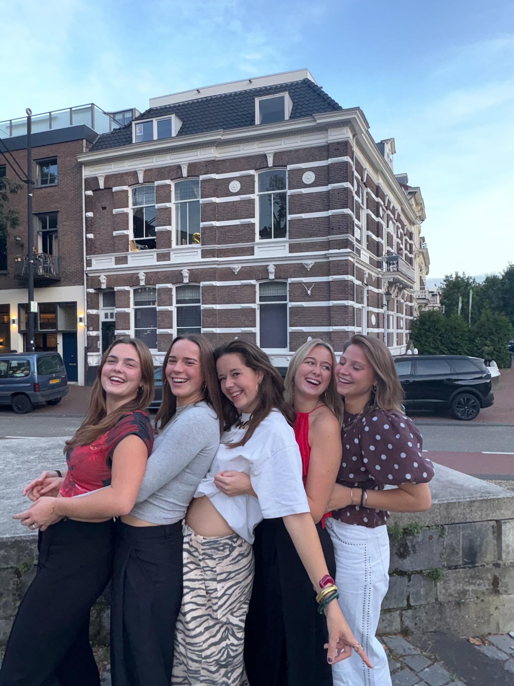
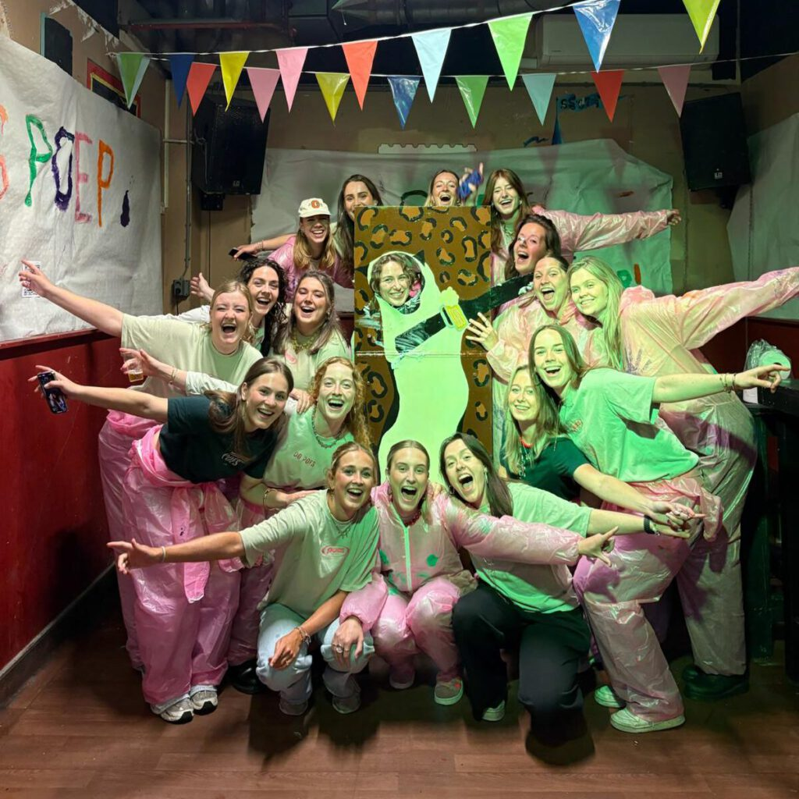
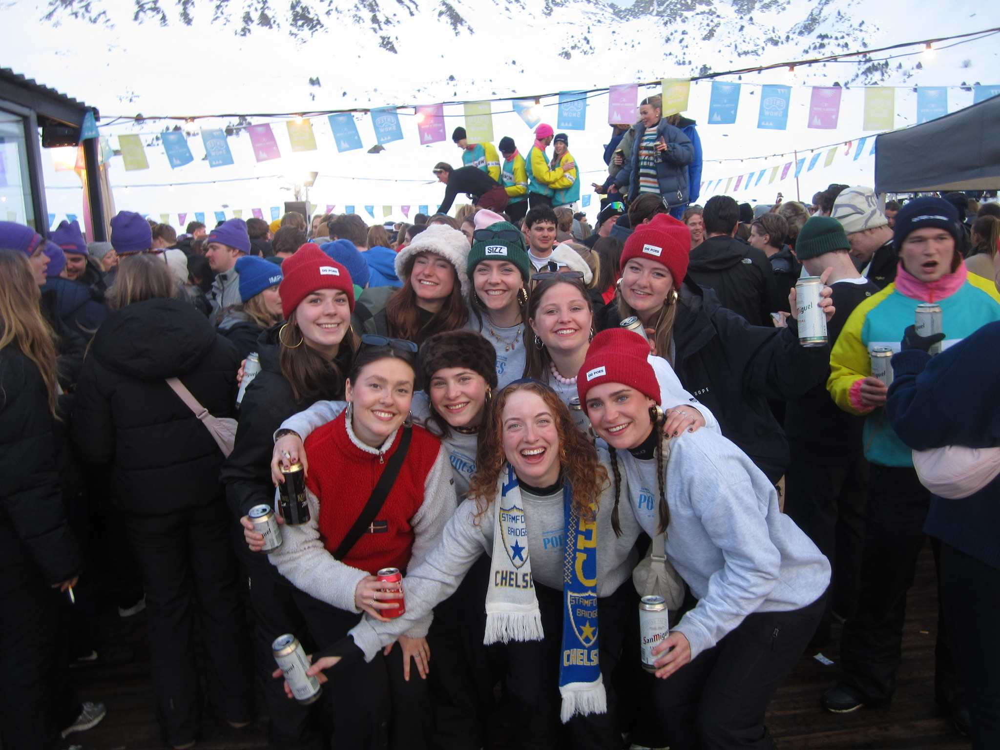

Britt
DJC FLINTH ’20
Damesgenootschap · N.S.V. Ovum Novum

Poes is een damesgenootschap binnen de N.S.V. Ovum Novum, opgericht op 23 oktober 2007.
Poes is stoer en hecht, een betrokken genootschap. Bij elkaar en bij de vereniging.
Op donderdag kun je ons vinden bij café Daen, maar ook op andere dagen zoeken we elkaar regelmatig op.
De meiden van Poes zijn niet op hun mondje gevallen, soms luidruchtig maar vaak ook niet.
Een divers genootschap, dus kijk vooral rond op deze site om ons te leren kennen!
“Zonder kat geen kwaad”

Momenteel bestaat DG Poes uit de volgende leden.


DJC FLINTH ’20

DJC Riskant ’20

DJC FLINTH ’20


DJC Venus ’21

DJC Venus ’21

DJC Nimra ’21


DJC WAANZIN ’22

DJC Falena ’22

DJC Jolie ’21


DJC Meave ’23

DJC Allumé ’23

DJC Liyo ’23

DJC Maeve ’23

DJC Ohana ’23

DJC MAX ’23

DJC Ohana ’23



DJC Abrupt ’23

DJC Fiasco ’24

DJC Soleil ’24

DJC Soleil ’24

DJC Flip ’24
Naast onze borrels, etentjes en activiteiten samen gaan we ook elk jaar op weekend. Geheel in thema zetten we vervolgens het centrum op stelten! Zo zijn we al in Harry Pussy style in Eindhoven geweest, hebben we voor ons land gestreden tijdens de Pussylimpics en hebben we het nieuwe seizoen van ‘Poes on the beach: Double Dutch’ beleefd in Volendam. Het is elk jaar weer een feestje!

Volle pullen bier, worst met sauerkraut, dames in Dirndls, een geweldige band, alle ingrediënten voor een supertol ganz geil Oktoberfest zijn aanwezig! Und aber natürlich, alleen maar foute en Deutsche hits… Nét alsof je in echt München staat! Ieder jaar organiseert DG Poes haar bekende Oktoberfest. Een tent met buitenbar, fantastisch eten en goed gevulde pullen. Maak je ook geen zorgen over lege pullen, want onze stoere Kittens vullen je pul de hele avond bij!

Elk jaar zetten we ons in voor een goed doel. Zo hebben we geld opgehaald voor o.a. het KWF, Stichting Achter de Regenboog, Club Goud, de CliniClowns en Stichting Jarige Job. In 2015 hebben we maar liefst 42 nieuwe donoren ingeschreven voor de Stamceldonorbank. Om zoveel mogelijk in te zamelen hebben we jou nodig, kom dus vooral feesten op het goededoelenfeest!
Wanneer je tijd in Nijmegen erop zit, je afgestudeerd bent of om wat voor reden dan ook het studentenleven moet verlaten, is er Opgepoesd.
We beginnen elk jaar goed met een diner verzorgd door de Kittens, altijd een groot feest.
Daarnaast houden we de banden warm, want hoewel verspreid over het land: je bent voor altijd Poes!
Anke / Lilian / Loukie / Marloes / Mayke / Nathalie / Rémi / Rozemarijn
Lichting ’08: Bianca / Karolien / Léonne / Manouk
Lichting ’09: Marieke / Roos / Saskia / Siobhan
Lichting ’10: Susanne / Vera / Yvonne
Lichting ’11: Emma / Marieke / Marlon / Nanique / Vivienne / Charley
Lichting ’12: Anne / Sara / Nikki
Lichting ’13: Laura / Maaike / Marjolijn / Niki / Inge
Lichting ’14: Dillah / Emily / Juliette / Meike / Myrna
Lichting ’15: Anna / Bieke / Charlotte / Esther / Nadia / Paula
Lichting ’16: Eva / Bente / Britt / Josephine
Lichting ’17: Charlotte / Maxine / Meilin / Sofie / Sophie
Lichting ’18: Beth / Eline / Isa / Manal / Nienke / Vicky / Welmoed
Lichting ’19: Amber / Celesta / Esmee / Kirsten / Lisa
Lichting ’20: Pleun / Fanne
Lichting ’21: Nynke / Nancy / Laurien / Sophie
Lichting ’22: Britt / Eva / Sophie / Meilin / Isa
Lichting ’23: Sofie / Beth / Nienke / Vicky / Welmoed / Amber / Celesta / Esmee / Kirsten / Lisa / Nynke / Pleun
Lichting ’24: Fanne / Laurien / Sophie / Nancy
Lichting ’25: Floor / Zoë / Annieck



Met groot verdriet en ongeloof hoorden we woensdag 19 juni 2019 dat onze fantastische Myrna er niet meer is. Beseffen dat onze enthousiaste, levenslustige vriendin niet meer bij ons zal zijn, doen we niet.
Myrna was ons onuitputtelijke promokanon, onze fanatieke ideeënbedenker en – uitvoerder. Wanneer je in haar sprankelende ogen keek, wist je dat ze weer een plannetje had. En dat ging ook gebeuren, want ze kreeg iedereen moeiteloos mee in haar enthousiasme.
Naast de vele dingen die ze ondernam voor o.a. studieverenigingen en andere verenigingen, zette ze zich eindeloos in voor DG Poes waar zij zo trots op was.
Het gaat moeilijk zijn om door te gaan in een wereld zonder jou, Myrnke. We gaan ons allerbest doen om te leven zoals jij deed.
Zien we een leeg podium? Grijpen we de kans om een show te geven. Zijn we bang om ergens alleen heen te gaan? Doen we het gewoon.
Denken we dat het beter kan, maar durven we het niet te zeggen? Zeggen we het toch. Onverstandig om aan een gordijnrails te hangen? Gewoon doen!
Je hebt zoveel Poezen bij elkaar gebracht. Je was ons fanatieke promokanon. Zaaien en binnenharken #promo.
We zullen je ontzettend missen. Voor altijd in onze harten, waar ook ter wereld.
Het verlies van een kanjer.
Op woensdag 12 november 2014 hebben wij het onwerkelijke nieuws gekregen dat onze Bianca er niet meer is.
Onze stoere, sterke, lieve, fantastische, prachtige, Bink. Onze stuiterbal, onze alles. Ze heeft keihard gevochten en alles wat ze kon uit haar veel te korte leven gehaald.
Lieve Bianc. Zaterdag was je nog bij ons, tijdens het reünistendiner. Wat een feest was dat. Je vertelde je beste en stoerste verhalen. We hebben zo hard om en met je gelachen. Het was weer even als vanouds. We hebben weer volop van je kunnen genieten en wat een onwerkelijk idee dat dat de laatste keer heeft moeten zijn.
We gaan je missen beschrijft niet eens bijna wat we nu voelen. Bianc, we houden van je en je bent er voor altijd bij.
@dgpoes
Contact
Borrelen, naar een toernooi, uitnodiging versturen of andere belangrijke zaken? Neem contact op met DG Poes via onze Krabbelkat!